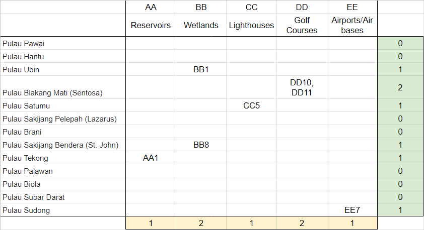
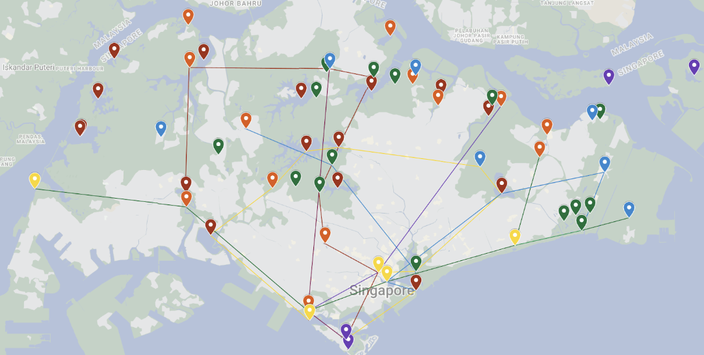

Solution: Connect the Dots
Answer: ROMEO
Written by Jonathan
The first step is to recognize the fact that some of the islands in Islands have landmarks explored in Pulau Ujong as well. Look for the geographic features/buildings on the 13 islands from "Islands" and add them as colored points to the map from Pulau Ujong; there will be 7 new points.
As given by the list of numbers, we can find that:
Pulau Ubin has a wetlands.
Pulau Blakang Mati (Sentosa) has 2 golf courses.
Pulau Satumu has a lighthouse.
Pulau Sakijang Bendera (St. John) has a wetlands.
Pulau Tekong has a reservoir.
Pulau Sudong has a airbase.
We can now add these 7 points to the map, assign each point their corresponding letters and numbers.
Pulau Ubin has Chek Jawa Wetlands, which would be BB1.
Pulau Blakang Mati has 2 golf clubs/courses, which would be DD10 and DD11.
Pulau Satumu has Raffles Lighthouse, which would be CC5.
Pulau Sakijang Bendera has St. John's Wetlands, which is BB8.
Pulau Tekong has Tekong Reservoir, which is AA1.
And Pulau Sudong has Sudong Military Airport, which is a little tricky to mark, but should be EE7 (if you marked it as EE8 that's fine too, we do not use either point in this puzzle).
Putting it all together, we should get something like the following table:

We can now follow the instructions to connect the dots. Using the connect the dots instructions, we can draw 6 continuous lines between many colored points (though lines won't always connect points of the same color).

When completed correctly, teams should get this map (colors not included). We now have 6 lines drawn on a map of Singapore. These 6 lines roughly follow the path of the 6 MRT lines in Singapore, which is further confirmed by each point being described in the form (alphabet)(alphabet)(number), just like MRT stations in Singapore.
Following the instruction to count the number of stations in each line, we can count the number of points on the map used to represent the MRT on our map. (e.g., the Downtown line is represented using 9 points) Use this number to identify that stop on its respective MRT, given the canonical numbering of the actual MRT line in Singapore (e.g., the 9th stop on the Downtown line is Botanic Gardens).
| Number of points | MRT line | Station Code | Station name |
|---|---|---|---|
| 4 | NE line | NE4 | Chinatown |
| 5 | TE line | TE5 | Lentor |
| 8 | EW line | EW8 | Paya Lebar |
| 9 | DT line | DT9 | Botanic Gardens |
| 10 | CC line | CC10 | MacPherson |
| 11 | NS line | NS11 | Sembawang |
Using the given indices, we can index into the stop's name. We can then reorder the MRT lines by the lines’ respectively openings, to get:
| Line opening | Station Code | Station Name | Index | Letter |
|---|---|---|---|---|
| 1987 | NS11 | Sembawang | 8 | N |
| 1989 | EW8 | Paya Lebar | 2 | A |
| 2003 | NE4 | Chinatown | 6 | T |
| 2009 | CC10 | MacPherson | 9 | O |
| 2013 | DT9 | Botanic Gardens | 14 | S |
| 2020 | TE5 | Lentor | 6 | R |
NATO’S R refers to the R in the NATO phonetic alphabet, which is ROMEO.
Author's Notes
MRT lines wise, there’s a bit of a mess in the center still, but overall the shapes and positions are decent. A part of me wanted a triplet of Singapore to not involve train lines, but having a map with points was just so nice. I would have liked the lines to use more of the points on the islands, but they skewed the map too far, and it looked better this way. I learnt a lot about Singapore when researching for this triplet (I did not know there was a reservoir on Pulau Tekong, for instance), and I hope everyone did too.